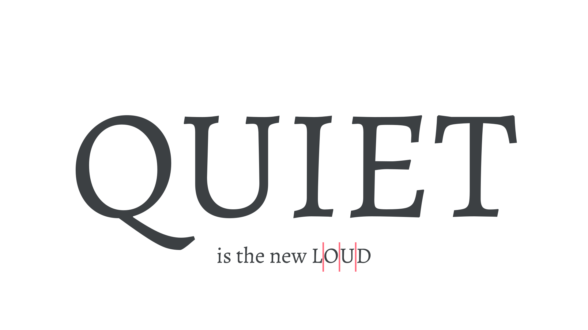

All-caps
By Google Fonts Knowledge contributors · Google Fonts Knowledge.
Original article · Source on GitHub · CC BY-SA 4.0. Text, illustrations and existing credits reproduced from the licensed Knowledge repository. Open Shelf adapted the layout and links; these adaptations are also CC BY-SA 4.0. No endorsement implied.
When text is set in only uppercase letters, it’s commonly abbreviated as all-caps. All-caps text can be hard to read unless that text is very short, so it’s best to keep it brief, such as for titles or emphasis. Don’t use it for body text. At any but the larger sizes, we often add additional tracking/letter-spacing to all-caps type that’s longer than two or three characters—this helps improve overall readability.

The all-caps word “QUIET" set in large type requires no tracking. The all-caps word “LOUD"—set much smaller—has additional tracking to aid readability.
If you have to use uppercase text within body text, consider using small caps. Small caps are designed to feel more at home with the rest of the lowercase type and won't “shout” so much at the reader.